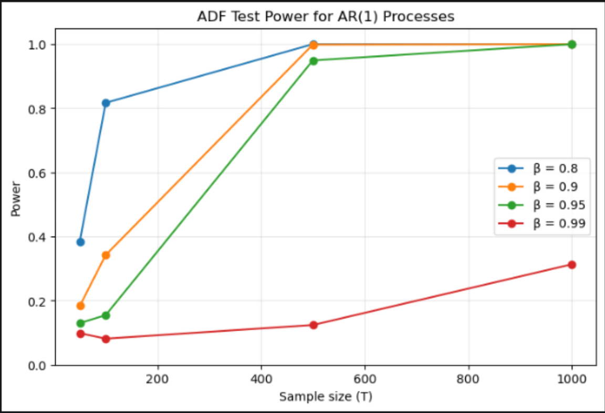
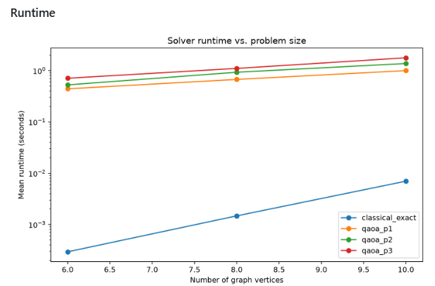
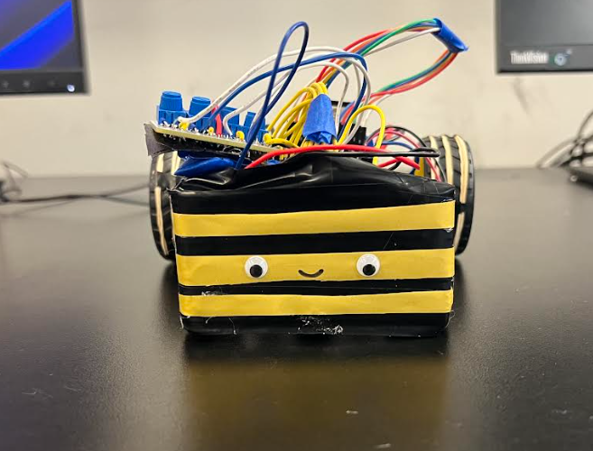

Electrical Engineering • Statistics • Machine Learning
Hi, I'm Misba.
I'm an Electrical Engineering student at UC San Diego interested in statistical modeling, machine learning, quantitative research, and engineering systems. I enjoy exploring mathematical models and developing them into applications that address real-world problems.
Selected Projects

AR(1) Time-Series Stability & Inference
Built Python simulations of autoregressive processes to investigate stability, unit-root behavior, and the reliability of statistical inference across varying sample sizes and parameter values.
Python Statistics Time SeriesView Project →

Quantum vs. Classical Max-Cut
Compared quantum and classical optimization approaches for the Max-Cut problem, implementing QAOA and classical methods to analyze solution quality and optimization behavior on graph instances.
Python Quantum Computing QAOA OptimizationView Project →

Autonomous Line-Following Robot
Built and programmed an ESP32-based autonomous robot using photoresistors, motor drivers, and feedback control to follow a track and dynamically adjust wheel motion.
ESP32 Embedded Systems PID ControlView Project →
Calming Device for People with Autism
Developed embedded C software for an IEEE UCSD project that measured environmental sound levels and automatically adjusted audio volume in response to surrounding noise.
C Embedded Systems IEEE UCSDRobotic Fish Prototype
Built a bio-inspired robotic fish using servo-driven oscillatory tail motion, magnetic stabilization, and a lightweight mechanical structure for controlled propulsion.
Robotics Servo Motors PrototypingSubstitute Management System
Developed a Java application to automate substitute-teacher tracking, generate personalized records, and provide search, file-management, printing, and sharing functionality.
Java Software DevelopmentEducation
University of California, San Diego
B.S. Electrical Engineering
Machine Learning & Controls Depth — Planned
September 2024 – Present
About
My interests lie at the intersection of statistics, machine learning, and engineering. I particularly enjoy understanding models from first principles, testing their behavior computationally, and exploring how they can be extended to increasingly complex real-world systems.